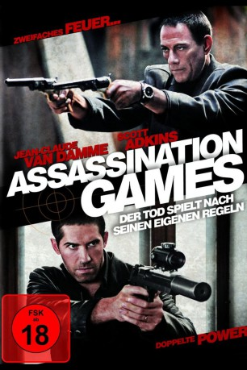

#2318 Assassination Games
 gesehen am 30.10.2015
gesehen am 30.10.2015
 
 IMDB-Wertung: 6.2 / 10
IMDB-Wertung: 6.2 / 10  Metascore: 0
Metascore: 0 
Brazil (Jean-Claude Van Damme) ist ein Auftragskiller, der jeden Job annimmt, solange der Preis stimmt. Flint (Scott Atkins) hat das Killergeschäft aufgegeben, nachdem seine Frau durch den brutalen Angriff eines skrupellosen Drogendealers ins Koma gefallen ist. Als beide auf diesen kaltblütigen Drogendealer angesetzt werden, wollen sowohl Brazil als auch Flint ihn tot sehen - einer wegen des Geldes, der andere aus Rache. Da korrupte Interpol-Agenten und üble Mitglieder des Gangstermilieus ihnen dicht auf den Fersen sind, schließen sich beide Killer widerstrebend zusammen, um ihr Opfer schnell auszuschalten, bevor sie selbst getötet werden.
Jahr: 2011
Dauer: 101 Minuten
FSK: 18
Land: USA Studio: Samuel Goldwyn FilmsTonspuren: DD5.1 - ,
Untertitel: Deutsch,
Auflösung: 1080p (1920x1080) Größe: 4464 MB
Genre: Action, Thriller
Regisseur: Ernie Barbarash
Drehbuch: Aaron Rahsaan Thomas
Soundtrack: Neal Acree
Darsteller:
 Jean-Claude Van Damme als Vincent Brazil
Jean-Claude Van Damme als Vincent Brazil Scott Adkins als Roland Flint
Scott Adkins als Roland Flint Ivan Kaye als Polo Yakur
Ivan Kaye als Polo Yakur Kevin Chapman als Culley
Kevin Chapman als Culley- Michael Higgs als Godfrey
- Kristopher Van Varenberg als Schell
- Marija Karan als October
- Bianca Brigitte VanDamme als Anna Flint
 Attila Árpa als Telly
Attila Árpa als Telly George Remes als Bartok
George Remes als Bartok Andrei Finti als Vadim Belsky
Andrei Finti als Vadim Belsky- Maria-Antoaneta Tudor als Herrod's Wife
- Maria Guzeeva als Svetlana
- Claudiu Trandafir als Doctor
- Jon Bailey als Announcer
- Valentin Teodosiu als Blanchard
- Alin Panc als Kovacs
- Serban Celea als Wilson Herrod
- Andrew French als Nalbandian
- Marioara Sterian als Mrs. Pavlescu
- Anghel Cristian als Bogdan
- Salahadine H. Beztout als Max
- Mario Marian als Danzo Yakur
- Viscreanu Constantin als Police Officer
- Alexandra Apetrei als Rodica
- Serbanescu Florin als Belsky's Bodyguard
- Loredana Groza als Loredana
- Kateryna Zakharchenko als Lena Belskaya
- Catalin Radu Tanase als Reporter
- Justin Bursch als Ionescu
- Sabin Piso als Groom
- Julian Burns als Groomsman
- Manuela Pana als Wedding Guest
- Florin Busuioc als Gregor Antonescu
- Sorin Cristea als Milton Smythe
- Iulia Lumânare als Maria Leonte
- Ioana Pavelescu als Judge
- Relu Poalelungi als Emil Lacroix
- Ruxandra Stanciu als Adele Lacroix
- Daniel Visan als
- Ryan H. Jackson als Hit Man , uncredited
- Boy Prevos als Walton , uncredited
Datei: X:\FSK18-2011\Assassination Games (2011, FSK18, 1920x1080).mkv seit 29.10.2015
Festplatte: FSK18
 Es gibt insgesamt 30 Filme in der Gruppe 'FSK18-2011'
Es gibt insgesamt 30 Filme in der Gruppe 'FSK18-2011'